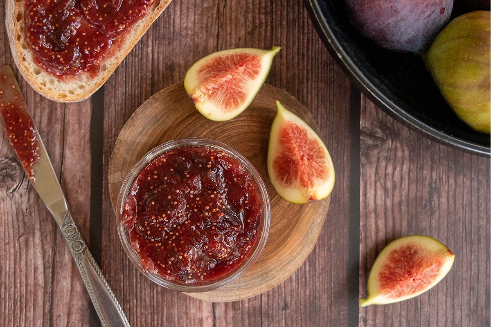

Fig Jam

Description
Give the gift of homemade fig jam to family and friends.
It's the perfect partner to a fresh loaf at breakfast time, or try swirled into natural yogurt.
Ingredients
- 1kg ripe figs, quartered
- 1 large orange, zested
- 400g granulated sugar
- 1 lemon, juiced, plus strips of zest, to serve (optional)
Steps
- Put the figs and 150ml water in a large heavy based saucepan.
- Bring to a simmer and gently bubble for 5 mins or until the figs have softened and released their juices.
- Add the orange zest, sugar and lemon juice.
- Bring to a boil and cook, stirring regularly for around 5-7 mins or until thick, skimming off any skum that rises to the surface.
- Remove from the heat and leave to sit for 10 mins.
- Ladle the mixture into sterilised jars.
- Seal with the lids and leave to cool completely.
Return to main page